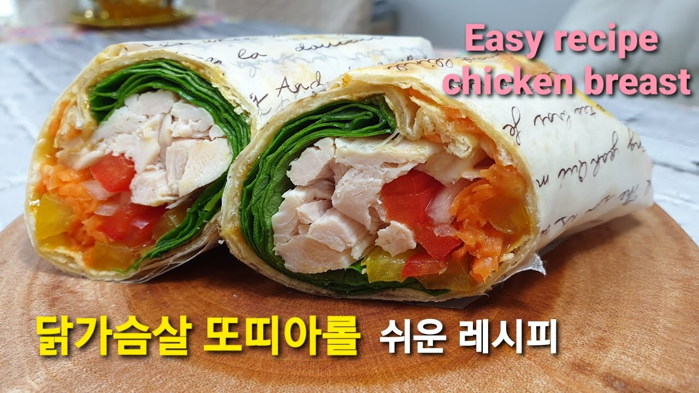

닭가슴살 또띠아롤 레시피
오늘은 맛도 좋고 다이어트에도 좋은 닭가슴살 또띠아롤 레시피를 소개합니다.

닭가슴살 또띠아롤 완성 이미지
재료
- 🍗닭가슴살: 100g / 1팩
- 🫓또띠아: 1장
- 🥬 양상추: 3장
- 🫑 파프리카: 1/3개
- 🧅 양파: 1/4개
- 🥕 당근: 1/6개
- 🍅 케첩
- 🧂 머스타드 소스
조리 순서
- 파프리카, 양파는 가늘게 채썰어요.
- 당근은 채칼을 이용해서 가늘게 채썹니다.
- 상추는 또띠아의 크기에 맞게 잘라서 사용합니다.
- 또띠아는 기름없이 앞뒤로 살짝만 구워줍니다.
- 닭가슴살은 손으로 찢어서 전자레인지에 1분 익힙니다.
- 케첩과 머스터드 소스를 1:1의 비율로 섞어 듬뿍 발라줍니다.
- 종이호일을 깔고, 위에 또띠아를 놓은 후 모든 재료를 듬뿍 올려줍니다.
- 예쁘게 말고, 사선으로 잘라서 완성해줍니다.
조리 시 주의사항
- 상추의 두꺼운 줄기부분은 사용하지 않습니다.
- 또띠아를 너무 오래 구우면 랩을 말 때 다 바스러집니다.
영양 성분 정보
- 🔥칼로리
- 약 350kcal
- 🥩단백질
- 약 30g
- 🍞탄수화물
- 약 20g
- 🧈지방
- 약 10g